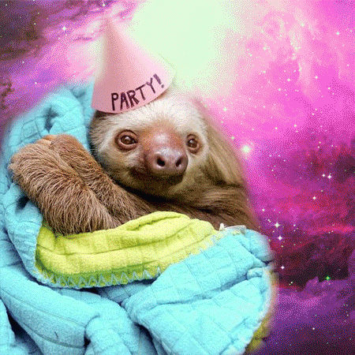

Choloepus hoffmanni
The more active of Costa Rica’s two sloth species, Choloepus hoffmanni is also the largest, with a head and body length of 540– 740mm and weight up to 12.5 kg. Unlike the Bradypus, it has no visible tail. Hair color ranges from champagne to buff to dark brown with a light brown to blond face with small brown eye rings. Their hairless, muzzle-like snout is longer and wider than that of the Bradypus, although their arms and legs are nearly the same length.
Choloepus have five cervical vertebrae and a special adaptation on the skull that allows them to tilt back the head at a 45º angle to look for food or danger while hanging from a branch. The Choloepus is a generalized herbivore, feeding on a wide variety of leaves, flowers, fruits, buds and shoots.
Most of its life is spent hanging upside down to eat, sleep or move about, so the Choloepus has developed short abdominal hair with the side hair flowing towards the mid-back for rain to drain off when they are upside down. The side hair joins the longer rump hair forming a “drip tip” that carries water off the body. Choloepus prefers to spend its non-foraging time in vine-draped vegetation clusters high in the canopy, making them more difficult to observe in the wild—and more elusive to researchers. During the “green” or rainy season, algae can grow in the hair, making it appear green, adding camouflage against predators.
Choloepus males reach sexual maturity between the ages of 4 and 5; females reach reproductive age at about 3 1/2 years. After an 11 month plus one week gestation, females give birth to a single young; however, we are seeing more and more cases of twin births. In the case of twins, mothers need to abandon the second born twin—allowing it to fall to the forest floor—as she is physically unable to raise two infants to social weaning age.
At birth the infant will cling to its mother’s abdomen, grasping her long side hair, for a year until independence. This is an essential learning period for the young sloth, as its mother teaches the baby what to eat and where to find food. At independence, the mother moves far away to other trees within her own home territory, leaving the newly independent sloth to source its own food. They may encounter one another in the same tree after the adolescent sloth has become accustomed to an independent, solitary life. The young may associate with the mother for up to two years, after which it will live a solitary life, only connecting with another sloth for mating purposes. The approximate life span of wild Choloepus hoffmanni is about 29 years.
-->